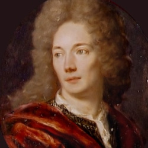

|
JRR Tolkien
I first read Tolkien at twenty and to this day his books remain perhaps the most enjoyable and indelible reading experiences I can recall. If any one person is responsible for my sense of literacy, it's him. |
|
-Hermann Hesse
Hesse was formative in shaping my sense of adventure and the self as seeker. |
 |
"Beware of two kinds of people: those who say there is no truth and those who say they know the truth." -Paul Tillich
A voice strong in both the rational and imaginative aspects, Tillich was a stabilizing presence when I became interested in religion and took the concept of "the meaning of life" very seriously. |
 |
"Convictions are more dangerous enemies of truth than lies." -Nietzsche
The most powerful prose writer I know, no one can turn a phrase like Nietzsche. To this day I've not found a writer whose work I identify with as personally. |
|
-Thomas Mann
Mann's books are like great cathedrals. In them we see the accumulated intellectual and artistic heritage of our civilization. |
 |
-Michel Houllebecq
A guilty pleasure. Talented pessimists, cranks and cynics are always welcome on my shelf! |
|
-Olaf Stapledon
A complex man full of hard truths, writing what is to this day some of the most wide ranging science fiction. Arthur C. Clarke called his book "Star Maker" the greatest imaginative work of fiction ever written. In the book the main character voyages across galaxies and to the boundaries of the universe and reality itself where he observes God creating and destroying worlds. |
|
-David Lindsay
A somewhat enigmatic figure who only wrote one great book which itself exudes a philosophical and moral intensity rarely seen in any literature. |
 |
-William Hope Hodgeson
An early amateur body-builder, trans-oceanic sailor, war hero, inspired writer of apocalyptic cosmic horror, and all around handsome guy WHH. |
|
-Giacomo Leopardi
Outside Nietzsche I can think of no more inspired work than the Zibaldone. |
|
-Thomas Jefferson
Jefferson was a complex and lively character, and I appreciate him for his internal tensions, inspired insights, and historical role. He's one of those figures around whom one becomes familiarized with an entire cultural, intellectual and political epoch. |
 |
-EM Cioran
The standup comedian at the end of Western Civilization... or something. |
 |
-Aldous Huxley
In his breadth of knowledge endlessly fascinating, Huxley makes for the ultimate cultural, artistic, literary and philosophical brain candy. |
|
Andre Gide
There are very few writers like Gide. He's capable of inducing a kind of ethereal, self-searching quality that never tires. |
|
La Rochefoucauld
First of the great French moralistes, inheritors of the Greek and Roman Hellenic traditions of pragmatic thought, La Rochefoucauld was a gentle cynic, a disappointed aristocrat, and an acute observer of human nature. |
|
Nicolas Chamfort
Another disappointed society wit, Chamfort embodies the epigram that the true cynics are found not outside of society but close to its center. |
|
Vauvenargues
Humane, gentle, enlightened if not quite modern, Vauvenargues teaches the subtle art of understanding another. |
|  |
La Bruyere
Observer at the court of Versailles, La Bruyere penned dense observations on human psychology. |